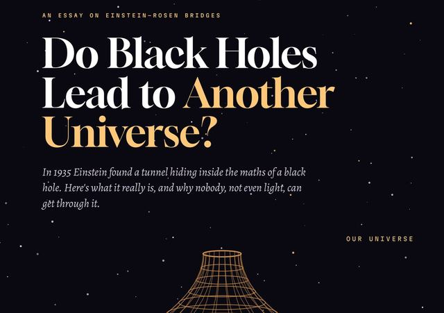

Do Black Holes Lead to Another Universe?
An easy walk through Einstein–Rosen bridges: what Einstein and Rosen found in the maths of a black hole in 1935, why the "two universes" idea misleads, why the bridge snaps shut before even light can cross, and what crossable wormholes, exotic matter, time machines and ER = EPR would really need.
The bridge exists in the maths, but it can't be crossed. It snaps shut faster than anything, even light, can get through.
27 pages · ~54 min read
